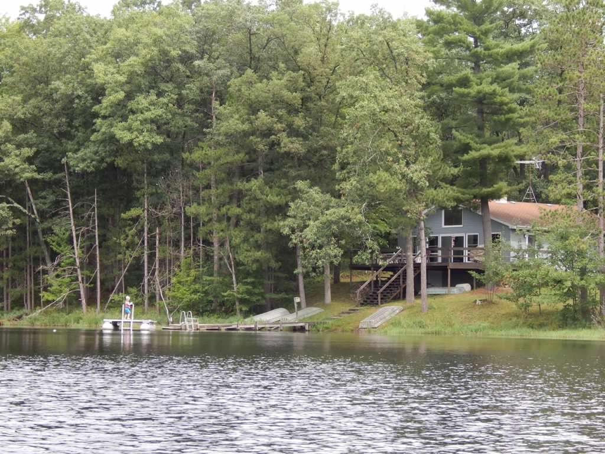
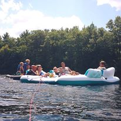

Our trips "Up North"
My parents are a part of a club. The name of the club is G.A.P.O.T.E.N. It stands for grab a piece of the earth now. My grandfather was a founding member and passed it onto my dad. The members of this club pooled money together and purchased "the cabin." They remodeled and added indoor plumbing. The cabin started as a very small two bedroom fishing cottage complete with outhouse. The club added more square footage by building an addition. Now the cabin is four bigger bedrooms with a kitchen, dining,and living area. The club built a huge deck off the house. The stairs come off the deck to a 12 acre pond. The cabin is the only house on the water. We travel to the cabin every August. My boys love to fish. A few of the trips there weren't any fish in the pond. The first time it was because the pond had frozen over due to the extreme cold of the polar vortex. This year we aren't really sure what happened.
 The cabin is a place to unplug from electronics. Many of our cell phones don't even have service up there. We don't use the T.V. unless we need to check the weather which is not much. The only device we use up there is a radio to listen to Moose Country FM 106.7. Even though we don't have electronics there is plenty to do. We swim in the pond or go fishing of course. This year my boys enjoyed chasing and catching frogs or snakes. We have paddle boats to ride around on or row boats if we feel like it. If it's raining we go to town or work on our 1000 piece puzzle. One of our favorite activities is floating down the Flambeau River. The first couple years we floated on our paddle boats. The last few years we have been using this really cool giant party raft.
Our cabin up north is my favorite vacation. I look forward to going every year. It's our place to be together and enjoy each our family.